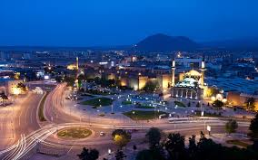
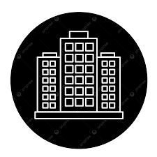
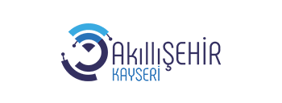
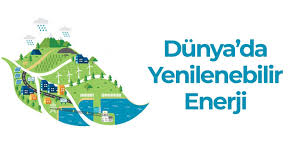

Yenilik, teknoloji ve sürdürülebilirlik ile inşa edilen bir gelecek.


Hakkımızda
Kayseri 2050 projesi, yenilikçi şehir planlaması, sürdürülebilir
enerji çözümleri ve teknolojik altyapı ile geleceğin şehrini inşa etmeyi hedefler.
Amacımız, yaşam kalitesini yükselten ve çevreye duyarlı bir şehir modeli oluşturmaktır.

Akıllı Şehir Altyapısı
IoT sensörleri ve yapay zeka ile trafik, enerji ve atık yönetimi daha verimli hale getiriliyor.

Yeşil Enerji Projeleri
Güneş ve rüzgar enerjisi yatırımlarıyla şehrin karbon ayak izi minimuma indiriliyor.
(TKİNSAN A.Ş.)ekibimiz:Şule Yağmur OĞUZ,hedefimiz:Tüm İNSANLIK
Bir kişi,bir şirket,bir amaç,bir Dünya;hepimiz için
Fiyatlandırma
İhtiyacınıza en uygun paketler
Temel Paket
Başlangıç özellikleri
E-posta desteği
30 günlük deneme
Standart Paket
Tüm Temel özellikler
Telefon desteği
Öncelikli güncellemeler
Premium Paket
Tüm Standart özellikler
Özel entegrasyonlar
7/24 öncelikli destek
En çok sorulanlar
En çok merak edilen konular
Kayseri 2050 nedir?
Yeterli destekçiniz varmı?
Projenin yürürlüğe girmesi ne kadar zaman alır?
Projenin faydaları nelerdir?
projenin faydalarını ne kadar süre zarfında görürüz?
Bizimle İletişime Geçin
Kayseri 2050 projesi hakkında sorularınız veya önerileriniz varsa bize ulaşabilirsiniz.
-05550207813